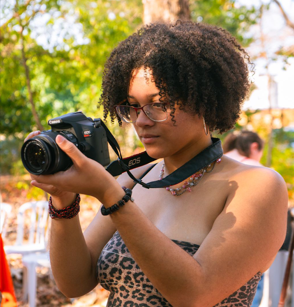

Entre ideias e descobertas.
Um pouco da minha trajetória, dos meus interesses e das experiências que fazem parte de quem sou.

Sobre Mim
Sou uma pessoa curiosa, criativa e movida pela vontade de conhecer coisas novas. Gosto de explorar diferentes formas de expressão, especialmente por meio da fotografia, da poesia, da música e do design. Minha formação técnica em Informática despertou meu interesse pela tecnologia e pelo desenvolvimento, mostrando como a criatividade também pode estar presente na construção de soluções. Fora desse universo, encontro no maracatu e nas manifestações culturais afro-brasileiras importantes espaços de aprendizado, identidade e conexão com a coletividade. Não me vejo limitada a uma única área ou interesse: gosto de experimentar, aprender com diferentes experiências e descobrir novas maneiras de enxergar o mundo. Acredito que são justamente essas vivências diversas que constroem quem sou e influenciam aquilo que quero criar.
Habilidades interpessoais
Características que procuro desenvolver nas minhas experiências pessoais, acadêmicas e profissionais.
- Comunicação
- Trabalho em equipe
- Organização
- Adaptabilidade
- Responsabilidade
- Proatividade
- Resolução de problemas
- Aprendizado contínuo
Interesses e hobbies
Fotografia, poesia, literatura, música, dança,
design e trabalhos manuais.
Gosto de conhecer
outras culturas, explorar referências artísticas
e encontrar inspiração nos detalhes do cotidiano.
Música e cultura
Maracatucá
Grupo de Maracatu, manifestação afro-brasileira vinda de Pernambuco,
localizado em Campinas, afilhado da Nação de Maracatu Porto Rico.
O Maracatucá é uma parte importante da minha trajetória.
A vivência no grupo me aproximou da percussão, dos
ritmos afro-pernambucanos e da força da construção
coletiva. É também um espaço de aprendizado, troca
e expressão cultural.
Referência cultural
Nação de Maracatu Porto Rico
Minha aproximação com a Nação Porto Rico amplia meu interesse pela história e pelas tradições do maracatu. É uma referência importante para compreender a riqueza dos ritmos, dos símbolos e dos saberes que atravessam essa manifestação cultural.
Experiência e aprendizado
Coletivo de Música Afro IF
Projeto de extensão do IFSP Campus Hortolândia dedicado ao ensino e à vivência de ritmos e instrumentos da cultura afro-brasileira, como maracatu, ijexá, samba, samba-reggae, baião e xote. Uma experiência que reúne música, formação cultural e atividades com a comunidade.
Expressão e escrita
Parada Poética
A poesia é uma das formas que encontro para organizar pensamentos e transformar experiências em palavras. Gosto da escrita que provoca reflexão, transmite sentimentos e permite diferentes interpretações.
Comunicação e criatividade
Dialogue
Um espaço de troca e expressão que representa meu interesse pela comunicação, pela arte e pelas diferentes perspectivas. Acredito que ouvir, compartilhar ideias e construir coletivamente também são formas de aprender.
Coisas que me movem
- A arte como forma de expressão e transformação.
- A música e a cultura afro-brasileira.
- Fotografar detalhes que contam histórias.
- Conhecer lugares, culturas e perspectivas diferentes.
- Aprender, experimentar e criar coisas novas.
- Conectar pessoas, ideias e experiências.
Pequenos detalhes
- Escrever me ajuda a organizar pensamentos.
- A música está presente em muitos momentos da minha vida.
- Tenho interesse por literatura de diferentes países.
- Gosto de trabalhos manuais e processos criativos.
- Encontro inspiração na natureza e nas manifestações culturais.
"Não quero me limitar ao que já conheço. Quero continuar descobrindo, experimentando e construindo novas versões de mim."